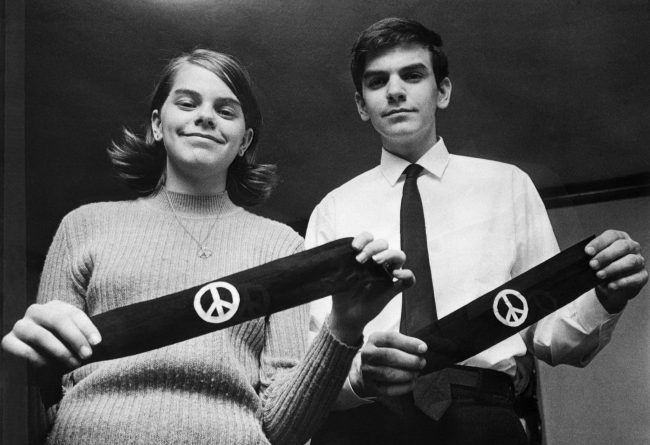

What was the Tinker versus Des Moines School District?
You might be wondering what the Tinker versus Des Moines School District is. Well, this was a landmark case that reached all the way to the Supreme Court of the United States. This protest was led by high school sophomores Christopher Eckhardt and John Tinker and eighth-grader Mary Beth Tinker Who wore black armbands to protest the Vietnam War in 1965. because their school banned the protest, and they were later expelled from school days later, their parents took the school to the Federal Court. The parents took the school to Federal Court claiming that their children's right to free speech had been violated. The school suspensions were found unconstitutional by the United States Supreme Court in a 7-2 ruling. The majority opinion, written by Justice Abe Fortas, first established that the student’s actions were “alike Pure speech”. Although their protest did not include any form of speaking, he argues that it deserved first amendment protection rights. He argued that it deserved the protections because “freedom of speech” could be expressed in different, unique ways.
Why should you consider learning this landmark?
Well, I think that it's very important to discuss this landmark and learn about it because the decision that was made by the Supreme Court really did help develop an example, precedent, the students do not shed the right of free speech once they enter school grounds.
"It can hardly be argued that either students or teachers shed their constitutional rights to freedom of speech or expression at the schoolhouse gate." Justice Abe Fortas, in Tinker v. Des Moines, 1969.
Please feel free to leave some questions below:
Jasmine Hernandez commented:
why did the students' lawyers argue that wearing the armbands was protected by the First Amendment?
This is a very good question to ask, The students' lawyers argued that wearing the wristbands was protected by the First Amendment because, at the school doors, students do not lose their constitutional rights to freedom of speech. Since wearing a black armband was not harmful, the Court ruled that the students' freedom to wear them was protected under the First Amendment. Freedom of speech could be expressed in unique ways not only by speaking.

Katherine Gomez commented:
How did Justice Fortas' concept of “pure speech extend First Amendment Free Speech rights?
Very good question, Justice Fortas's concept of pure speech extends that although their protest did not include any form of speaking, he argued that it deserved “First Amendment protection rights”.He felt that that was the right decision because the protest was similar to the concept of free speech.
Made just for Nadia by EricCodes.